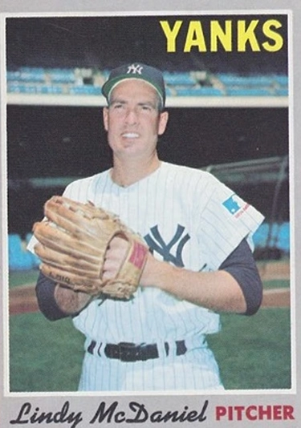

Lindy McDaniel "Lindy"
Career Highlights & Facts
(Facts are AI-generated and may require verification)
- Became the first relief pitcher to ever receive a vote for the Cy Young Award.
- Pitched in both games of a doubleheader on a single day, recording a loss in the first game and a win in the second.
- Shared the mound with a younger brother in the major leagues, drawing comparisons to a famous sibling duo from the past.
Would you like to find out more about Lindy McDaniel?
A lifelong pursuit toward a ministerial career was put on hold for 21 years while the devoutly religious Lindy McDaniel labored in his temporary gig as a major-league hurler. During the interim employment he alternately became both the “toast of the town … [and] the roast of the town with his ups and downs.”
Possessor of one of the finest curves and later forkballs the game has ever known, McDaniel rode his pitching mastery to a longevity that shattered numerous records. Not bad for temp work.
Born on December 13, 1935, Lyndall Dale McDaniel earned the nickname Lindy at 4 years old in a nod to the famous aviator Charles Lindbergh. Hollis, Oklahoma, a one-stoplight town in the southwest part of the state, was Lindy’s home throughout the early stages of his life. Hollis, whose population has never exceeded 3,200, remains large enough to have made a sizable splash in sports, serving as home to two successful college coaches, a professional football player, and four professional baseball players (two of whom were Lindy’s younger siblings, Von and
Kerry Don
).
Among the childhood pleasures of rabbit hunting and taking in Western action movies, Lindy and his brothers developed a passion for baseball with gloves made “of sacks, crudely sewn in the shape of their hands.”
This handicap was overcome by a certain inherited athleticism: His father, Newell (a cousin of famed University of Texas football coach Darrell Royal), had been an accomplished athlete in tennis and track. Newell and his wife, Ada Mae (Burk) McDaniel, raised their four children in a deeply religious manner. Fearing the temptations that might befall her son, Ada Mae required a great deal of persuasion before concluding that baseball was a fit pursuit.
She was forced to reach this conclusion early when the St. Louis Cardinals began scouting her son before he was 16. Lindy had established himself as a star hurler at Arnett High School, a reputation further enhanced by his exploits on the Altus American Legion team. Alongside teammates Eddie Fisher and Tony Risinger – both of whom would go on to play professionally – the team captured two consecutive state championships. Though the attraction between prospect and team was mutual – Lindy grew up idolizing the Cardinals’ Stan Musial and the earlier feats of Dizzy Dean – he accepted a four-year basketball scholarship offered by the University of Oklahoma.
The Cardinals had kept tabs on the Hollis native, and when scout Fred Hawn signed him three months before his 20th birthday, it was reported that St. Louis had five years of data on McDaniel. By signing with the Cardinals McDaniel became ineligible for college athletics and, three days after his fourth appearance as a major leaguer, he enrolled at Abilene Christian College in Texas. The $50,000 price tag qualified McDaniel as a “bonus baby” who, under the rules then in effect, had to be placed on the Cardinals’ roster. Dubbed “the eleventh member of a ten-man staff,”
McDaniel was inserted into mop-up duty a day after he reported to the club. The positive impression made in this and a subsequent outing earned McDaniel his first starting assignment, on September 19, 1955, against the Chicago Cubs, when he yielded Hall of Famer Ernie Banks’ then-record fifth grand slam of the season. Despite a hefty 4.74 ERA in 19 end-of-the-season innings, his potential was glimpsed by the league’s senior umpire of 40 years, Babe Pinelli, who offered that “[McDaniel] showed me one of the best curves I’ve ever seen.”
Entering the 1956 campaign, the Cardinals had not won a pennant in ten years and, due to a near-league worst 3.97 ERA, they would not come close during McDaniel’s first full season. Nineteen pitchers took the mound for St. Louis but only two managed less than a 3.50 mark: 39-year-old Murry Dickson and 20-year-old McDaniel. Excluding a handful of difficult outings, McDaniel finished with a 2.37 ERA in 34 appearances that prompted manager Fred Hutchinson to remark, “I don’t know what we’d do without him.”
Though he got the occasional starting assignment (including a complete-game victory over the Cubs on September 25) most of his success was achieved from the bullpen – a harbinger of his future.
For the second consecutive year McDaniel reported to 1957 spring training as the Cardinals’ youngest player. A reshuffling of the pitching staff saw relievers McDaniel and Larry Jackson inserted permanently into the rotation, and with the later addition of another $50,000 bonus baby –
Lindy’s younger brother, Von
– the Cardinals were thrust into immediate pennant contention. While Lindy set a course for a team-leading 15 victories and ten complete games, Von turned his first starting assignment into a two-hit shutout over the Brooklyn Dodgers that soon drew comparisons to another successful brother combination from the Gas House Gang era, Dizzy and Paul Dean (a comparison enhanced when Von was a two-base hit shy of a perfect game against the Pittsburgh Pirates on July 28). Lindy had posted his first shutout on May 16 with a four-hit gem against the Philadelphia Phillies. Though an August collapse doomed the Cardinals’ hopes for the National League crown, the McDaniel brothers appeared poised for long and fruitful careers in St. Louis. But that never came to fruition: Von made two brief appearances in 1958 and never donned a major-league uniform again. Meanwhile, Lindy suffered the first of a series of Jekyll-and-Hyde seasons that became part of his signature in the majors.
The 1958 Cardinals never fully recovered from a 3-14 start to the campaign, and McDaniel’s season followed suit. After 11 starts his record stood at 3-5 with a 5.49 ERA, the lone bright spot being a shutout over Philadelphia. Moved to the bullpen, he fared little better. On August 14, with the bonus-baby rules since relaxed, St. Louis demoted McDaniel to Triple-A Omaha –the only time in his long career that he served in the minors. Roster expansions in September afforded McDaniel one final outing, but he closed the season with a 5-7, 5.80 record.
As mysteriously as he slumped in 1958, McDaniel just as mysteriously rebounded for a fine two-year run. A complete-game victory over the Los Angeles Dodgers in his first outing of 1959 reflected his determination to win back his spot in the rotation, but six subsequent starts proved less successful. Relegated again to the bullpen, McDaniel blossomed into the relief specialist that – with the addition of a forkball to his repertoire – represented the successful remainder of his career (he started only 15 games over the next 15 years). From the time he was shifted into the bullpen until the end of the 1960 season, McDaniel posted a record of 24-9 with a 2.40 ERA and was established as one of the premier relievers in the game. In 1960 he was selected for the All-Star Team for the only time. After the season he finished fifth in the voting for the NL Most Valuable Player and third for the Cy Young Award. (He was the first reliever to ever receive a Cy Young Award vote.) He was the first recipient of
The Sporting News’
National League Fireman Trophy, and shared with teammate Ernie Broglio the J.G. Taylor Spink Award as the St. Louis Baseball Man of the Year as determined by the local chapter of the Baseball Writers’ Association of America (where during the ceremony the preacher-to-be was asked to deliver the invocation).
In this same two-year span McDaniel entered the record books in a unique manner: On May 10, 1959, he pitched in both games of a doubleheader against the Cubs, losing the first game and winning the second. The Cubs’ Elmer Singleton won the opener and lost the nightcap. This rare combination had occurred only twice before and four times since in the major leagues through 2012.
The 1959-60 ascendency of Jekyll yielded to Hyde in 1961-62. A strong finish to the 1961 campaign helped mask a 6.05 ERA on July 20. The next year McDaniel suffered a late collapse that saw his ERA rise from 2.14 on July 7 to 4.12 at season’s end (with a 3-10 won-lost record). Rumors emerged about McDaniel’s availability and, in spite of his difficulties, teams began courting.
The day after the 1961 World Series ended, the Cardinals traded McDaniel and fellow pitcher Larry Jackson to the Cubs, hoping to improve on the team’s paltry home run output with the acquisition of slugger George Altman. McDaniel and Jackson were deemed expendable with the emergence of young pitchers including such as Ray Washburn and Ray Sadecki. The Cubs were seeking to bolster a pitching corps whose runs yielded in 1962 were exceeded only by the hapless expansion New York Mets. Weeks later Lindy’s feeling on the parting was parodied by sportscaster Jack Buck in a fictitious telegram to manager Johnny Keane: “Dear John – Gee whiz … darn it … golly … and oh dear. – P.S.: Heck.”
– a gentle, respectful jab at the player whose closest brush with profanity was “doggone it!”
If the Cubs were hoping for a comeback season from McDaniel that is exactly what they got. Their pitching staff went from one of the worst in the league to one of the best, and McDaniel was credited largely for the turnaround. “[McDaniel] brought a new atmosphere of confidence and know-how to our pitching staff,”
said 22-game winner Dick Ellsworth as the team logged its first winning campaign in 17 years. Thirteen victories and a 2.86 ERA helped McDaniel become the first to win two Fireman Trophies in the National League.
Perhaps it was the novelty of pitching for a different club that brought out the best in McDaniel, for although he logged two more fine campaigns with the Cubs – including a record 155 appearances by him and Cubs submariner Ted Abernathy in 1965 – McDaniel found himself hurling on the West Coast in 1966. (His legacy: Until 1977, when Bruce Sutter set a new standard for relief in Chicago, McDaniel’s name was often invoked when a pitcher on either the White Sox or Cubs emerged as the team’s primary closer.) Despite the efforts of McDaniel and Abernathy, the Cubs had reverted to their familiar bent with a 90-loss campaign in 1965. After the season the club looked to fill numerous needs, one of which was at catcher. The Cubs had long coveted San Francisco catching prospect Randy Hundley. Notwithstanding new manager Leo Durocher’s comment in November that the Cubs could not “afford to part with him,”
McDaniel became part of the price paid to acquire Hundley. Perhaps no two players were happier than two Giants, future Hall of Famers Willie Mays and Willie McCovey.
When Mays first encountered Jim Bunning in the 1957 All-Star Game, he reached for McDaniel as an apt comparison of how tough he was to hit against by stating, that Lindy “made us hit the ball on the ground.”
Six years later McCovey echoed his teammate, saying, “I’d prefer to face a number of [left-handers] rather than … Lindy McDaniel.”
Both took solace in the knowledge that this feared hurler was now in the same uniform. Still another player may have been even more ecstatic: Giants closer Frank Linzy. “McDaniel … will make our bullpen stronger than a year ago when [rookie] Frank Linzy had to carry the big load,” said manager Herman Franks.
As if on cue, McDaniel turned in one of his finest seasons in 1966. He and the Dodgers’ Phil Regan were the only National League relievers to reach double figures in victories. In a four-week stretch beginning August 6, McDaniel was nearly untouchable: a scoreless streak of 20? innings over ten appearances that contributed to a 1.95 ERA after the All-Star break. A sentimental honor for him was his five innings of one-hit relief on May 8 that earned McDaniel the final victory in a venue he knew very well – the first Busch Stadium. Though the Giants held a stake in first place for more than 60 percent of the campaign, they were eliminated on the last day of the season. It was the closest McDaniel ever came to participating in postseason play – the one regret he had in his career.
Injuries marred much of McDaniel’s 1967 campaign. He was a pitcher who thrived on work, and his numbers suffered when a sore shoulder sidelined him for five weeks. A strong close (2.18 ERA in his final 20 appearances) did not forestall rampant trade rumors, and when in 1968 McDaniel had a 7.45 ERA on July 4, the Giants placed him on waivers. McDaniel later acknowledged thinking of retirement during this difficult stretch, but those thoughts were shelved when the New York Yankees claimed him and the two teams worked out a deal aimed at reviving the careers of two thirty-something hurlers McDaniel was exchanged for Yankees right-hander Bill Monbouquette. As witnessed in previous patterns, his season promptly turned around.
McDaniel made his first appearance in pinstripes two days after the July 12 transaction and manager Ralph Houk ensured continuous use thereafter – a positive development for the rubber-armed veteran whose success was anchored on such use. Four wins and ten saves later, McDaniel received considerable credit for the Yankees’ first winning campaign in four years. “We were losing games in the eighth and ninth innings because no one in the bullpen could lock up these games,” Houk said. “If we had had [McDaniel] the first half, I am sure we [would’ve been] in the pennant race.”
A successful five-year run ensued in New York. In his second season he again got votes for MVP. With nine wins, 29 saves, and a 2.01 ERA in 1970, he nearly captured a third Fireman’s Award. In 1972 and 1973 (in a nod to
The Odd Couple)
he served as the Felix to fellow reliever Sparky Lyle’s Oscar,– “the austere, quiet lay preacher [paired with] the bon vivant, the fun-loving Rover boy of loud laughter and practical jokes.”
On September 23, 1973, McDaniel made his 907th career appearance, passing Cy Young for second place on the all-time list. But by the end of the 1973 campaign, the travel associated with a major-league career was taking its toll on the 37-year-old righty. The strain of separation for a married man of 16 years, compounded by separation from the churches he served, only added to this toll.
As a young Cardinal McDaniel studied in the offseasons at Abilene Christian College in 1955-56. Then he transferred to Florida Christian College. His motive: He’d fallen in love. During spring training he had met Oral Audrey Kuhn, who was a student at Florida Christian, which was in Temple Terrace, Florida, not far from the Cardinals’ training site in St. Petersburg. They were married on January 24, 1957. For years thereafter, when the Florida Christian student body attended Grapefruit League games, McDaniel had his own personal cheering section. In 1964, when McDaniel was a Cub, the school’s new athletic field was named for McDaniel. They had three children, Dale, Kathi, and Jonathan, and as of 2013 had 13 grandchildren and four great-grandchildren. Eventually McDaniel was ordained a minister of the Church of Christ, and preached for congregations in his hometown of Hollis, churches in Missouri during his years with the Cardinals, and in Baytown, Texas. McDaniel began publishing a religious newsletter, “Pitching for the Master,” which in 2013 he was still writing from his calling in Lavon, Texas, 30 miles northeast of Dallas.
To remedy the challenges of separation, when the Yankees would not acquiesce to a two-year contract, McDaniel requested a trade after the 1973 season in order to be closer to his religious and familial responsibilities. The Yankees engineered a swap with Kansas City on December 7 for pitcher Ken Wright and outfielder Lou Piniella. Unaccustomed to pitching regularly on artificial surfaces like that at the Royals’ ballpark, McDaniel had trouble inducing groundballs on the harder, faster surface, and in his two seasons with Kansas City he was lit up for a 4.98 ERA versus 2.87 on grass. These difficulties notwithstanding, the Pittsburgh Pirates, who also played on an artificial surface sought (unsuccessfully) to obtain McDaniel during the 1974 pennant race when their pitching was struck by a series of injuries – a clear indication of the esteem for McDaniel at almost 39 years old.
In Arlington, Texas, on September 27, 1975, Texas Rangers’ right fielder Jeff Burroughs grounded out in the eighth inning on McDaniel’s last pitch in the major leagues. (He had previously announced he would retire.) When McDaniel retired he trailed only Hoyt Wilhelm in career appearances, relief victories, and relief appearances. Wilhelm was elected to the Hall of Fame, but McDaniel got only four votes for the Hall over a two-year period.
In 1968 McDaniel tied Vic Raschi’s American League record of 32 consecutive batters retired. (Kansas City teammate Steve Busby broke the record in 1974.) McDaniel made only 22 errors in his career, and set the NL record (since broken) for most consecutive games by a pitcher without an error, 225. For his humanitarian efforts he was given the Ken Hubbs Memorial Award in 1970 by the Chicago baseball writers. In 1978 the St. Louis baseball writers named him one of the 15 best players during the then-25-year ownership of Anheuser-Busch.
In mid-career McDaniel offered a modest assessment of his ability: “If I wasn’t a relief pitcher I probably wouldn’t be in the majors. I may not have realized it at the time, but when I went to the bullpen, it was a break for me.”
He was characterized as a person with a serene disposition and a ready smile. He was never ejected from a game or suspended for a rules infraction. But he was also a fierce competitor on the mound. Perhaps no one captured this competitiveness better than Joe Garagiola (echoing a comment from Gil Hodges in 1957): “Lindy’s the only preacher I know with a great knockdown pitch.”
That competitiveness resulted in a productive 21-year career: fine work for a part-timer.
Author’s note
The author wishes to thank Lindy McDaniel for his time and assistance in ensuring the accuracy of this narrative. Further thanks are extended to Mike Emeigh and Len Levin.
Baseball-reference.com
Ancestry.com
“Rebounding Lindy Lion of Yank Bullpen,”
The Sporting News,
May 30, 1970, 13.
“McDaniels of Cardinals Revive Dean Act,”
The Sporting News,
June 12, 1957, 3.
“Cards’ 50-Grand Gee-Whiz Strikes Gold Dust on Relief,”
The Sporting News,
June 6, 1956, 8.
“50-Grand McDaniel Starts Paying Off Cards,”
The Sporting News,
May 2, 1956, 2.
“Cards’ 50-Grand Gee-Whiz Strikes Gold Dust on Relief,”
The Sporting News,
June 6, 1956, 8.
“Spieler Buck’s Fake Messages Give Banquet Guests a Barrel of Laughs,”
The Sporting News,
December 1, 1962, 36.
“Ellsworth First Cub to Log 20 Wins Since ’45,”
The Sporting News,
September 14, 1963, 9.
“Lip Slams Brakes On Yarn That Cubs Will Trade Lindy,”
The Sporting News,
November 20, 1965, 6.
“Bunning Best Musial’s Seen; ‘He Had the Most,’ Says Mays,”
The Sporting News,
July 17, 1957, 8.
“McCovey Aiming to Double HR Tempo Against Lefties,”
The Sporting News,
December 14, 1963, 17.
“Chirpin’ Herman Claims Giants ‘Look Stronger’ Than Year Ago,”
The Sporting News,
January 29, 1966, 21.
“Revived McDaniel Perks Up Sagging Yankees’ Bullpen,”
The Sporting News,
August 17, 1968, 16.
“Fire Fighters’ Local Speeds Up Yank Express,”
The Sporting News,
July 14, 1973, 15.
“Lindy Finds Good Life – He Gets Rich on Relief,”
The Sporting News,
April 15, 1967, 13.
“Fireman Lindy Ready to Quell Cubs’ Troubles,”
The Sporting News,
March 20, 1965, 17.
Full Name
Lyndall Dale McDaniel
Born
December 13, 1935 at Hollis, OK (USA)
Died
November 14, 2020 at Carrollton, TX (USA)
Stats
Baseball Reference
Retrosheet
Siblings
Career Totals
| WAR | W | L | ERA | G | GS | SV | IP | SO | WHIP |
|---|---|---|---|---|---|---|---|---|---|
| 28.2 | 141 | 119 | 3.45 | 987 | 74 | 174 | 2139.1 | 1361 | 1.272 |
Statistics via Baseball-Reference.com
The Original Clue